Nachdem das richtige Anschlagmittel, nämlich Seil, Kette, Hebeband oder ein kombiniertes Anschlagmittel, ausgewählt worden ist, stellt man fest, wie dick es sein muss. Die vorhandene Last soll gehoben werden, ohne dass das Anschlagmittel überlastet wird. Die Tragfähigkeit gibt die Masse an, die höchstens mit dem Anschlagmittel gehoben werden darf (Bild 14-1). Bei der Beurteilung der Belastung von Anschlagmitteln sind folgende Überlegungen notwendig:
| Neigungswinkel | Tragfähigkeit jedes Stranges im Zweistranggehänge |
Tragfähigkeit des Zweistranggehänges |
|
| 0° | 100% | 2 x 1,0 | |
| bis 45° | 70% | 2 x 0,7 | |
| 45° bis 60° | 50% | 2 x 0,5 | |
| über 60° | Verwendung unzulässig | ||
Bild 14-1: Beurteilung der Belastung von Anschlagmitteln
Grundsätzlich gilt:
Wenn eine Last an einem oder mehreren senkrechten Strängen angeschlagen wird und sich die Last gleichmäßig auf alle Stränge verteilt, darf mit der Tragfähigkeit aller Stränge gerechnet werden.
Wenn sich die Last jedoch nicht gleichmäßig auf alle Stränge verteilt, darf bei zweisträngigen Anschlagmitteln nur mit der Tragfähigkeit von einem Strang bzw. bei drei- und viersträngigen Anschlagmitteln nur mit der Tragfähigkeit von zwei Strängen gerechnet werden. Wenn eine Last so angeschlagen wird, dass die Stränge einen Winkel zur Lotrechten bilden, den so genannten Neigungswinkel, so vermindert sich die Belastbarkeit der einzelnen Stränge.
Die Belastbarkeit wird dabei umso kleiner, je größer der Neigungswinkel wird (Bilder 14-2 bis 14-4). Aufgrund dieser Gesetzmäßigkeit muss daher bei größer werdendem Neigungswinkel ein stärkeres Anschlagmittel verwendet werden. Neigungswinkel über 60° sind verboten!
Mit Neigungswinkel wird der Winkel bezeichnet, der gebildet wird aus der Richtung eines Stranges des Anschlagmittels und einer gedachten Lotrechten. Er lässt sich auch bei mehrsträngigen Gehängen gut messen, weil er von außen zugänglich ist.
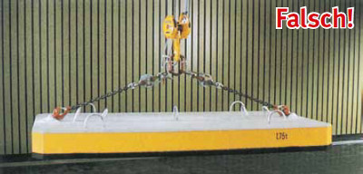
Bild 14-2: Demonstrationslast mit Messelementen im Haken mit bis zu vier Kettensträngen. Bei diesem unzulässig hohen Neigungswinkel übersteigt die Kraft in jedem Einzelstrang das Gewicht der Last!
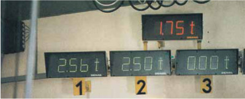
Bild 14-3: Im Einzelstrang werden über 2,5 t gemessen, obwohl das Gewicht der Last nur 1,75 t beträgt
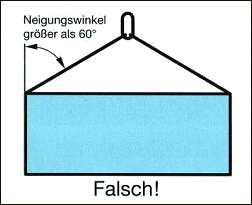
Bild 14-4: Unzulässig großer Neigungswinkel
Bei Lasten mit ungleichmäßiger Form liegt der Schwerpunkt nicht in der Mitte der Last. Die Last hängt deshalb schief und belastet einen Strang mehr als den anderen (Bild 14-5).
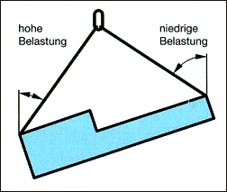
Bild 14-5: Last hängt schief; daher sind die Neigungswinkel nicht gleich groß.
Zur Vermeidung einer Überlastung des stärker belasteten Stranges darf nur ein Strang als tragend angenommen werden: Die Anschlagmittel müssen daher so ausgewählt werden, als ob die Last nur an einem Strang angehängt wäre.
In Belastungstabellen kann über den Neigungswinkel die maximale Tragfähigkeit für Anschlagmittel abgelesen werden (Bild 14-6).
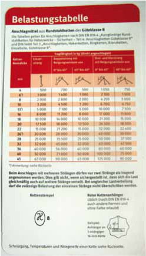
Bild 14-6: Entsprechend den Neigungswinkeln liest man die Tragfähigkeit ab!
Als Beispiel für die folgenden Berechnungen soll das Anschlagmittel immer eine Einzelstrangtragfähigkeit von 1000 kg besitzen:
In den nachfolgenden Bildern 14-7 bis 14-16 soll gezeigt werden, wie schwer die Last bei den verschiedenen Anschlagarten dabei höchstens sein darf.
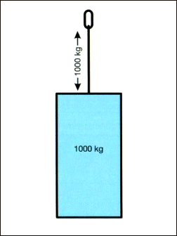
Bild 14-7: Einsträngige Aufhängung:
Dies ist die einfachste Art des Anschlagens. Die Last darf so groß
sein wie die Tragfähigkeit des Einzelstranges.
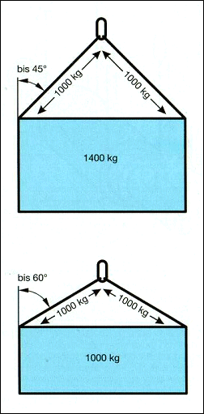
Bild 14-8: Zweisträngige Aufhängung mit Neigungswinkel:
Die Last wird mit zwei oder mehr Seilen bzw. Ketten
angeschlagen. Entsprechend dem Neigungswinkel reduziert sich
deren Tragfähigkeit.
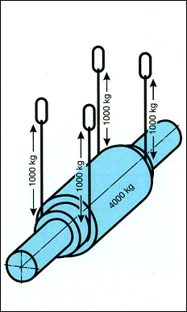
Bild 14-9: Hängegang senkrecht:
Die Last darf so groß sein wie die Summe der Tragfähigkeit der
vier Stränge, wenn der Durchmesser der Last groß genug ist und
damit keine scharfe Kante bildet. Im Hängegang darf nur dann
angeschlagen werden, wenn großstückige Lasten so befestigt
werden, dass die Anschlagmittel nicht verrutschen oder sich
verlagern können.
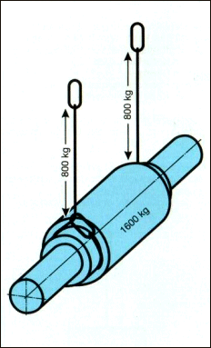
Bild 14-10: Schnürgang senkrecht:
Wegen der Biegebeanspruchung im Schnürpunkt (Schlupp) ist
die Tragfähigkeit auf 80% verringert.
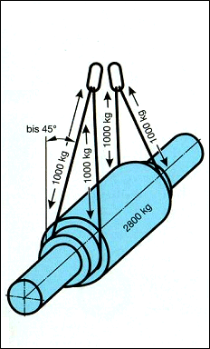
Bild 14-11: Hängegang mit Neigungswinkel:
Wegen des Neigungswinkels darf nicht die volle Tragfähigkeit der
beiden Doppelstränge genutzt werden (4 x 700 kg).
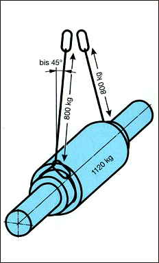
Bild 14-12: Schnürgang mit Neigungswinkel:
Die Last hängt an zwei Strängen. Die Tragfähigkeit ist
entsprechend dem Neigungswinkel zu verringern. Die durch den
Schnürgang (Schluppen) erforderliche Herabsetzung auf 80%
muss zusätzlich berücksichtigt werden.
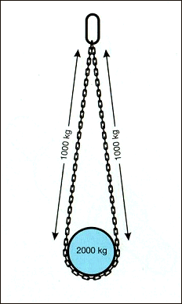
Bild 14-13: Wird eine Last mit einer Kranzkette, deren beide Enden an einem gemeinsamen Ring befestigt sind, so angeschlagen, dass die Kette im Hängegang knickfrei um die Last liegt und der Neigungswinkel vernachlässigt werden kann, darf jeder Strang als voll tragend angesehen werden. Bei Abweichungen bis 7° darf dies unberücksichtigt bleiben.
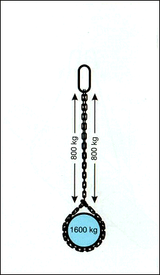
Bild 14-14: Wird eine Kranzkette im Schnürgang um die Last gelegt, muss die Tragfähigkeit wegen der Biegebeanspruchung im Schnürpunkt auf 80% der Tragfähigkeit des Doppelstranges verringert werden.
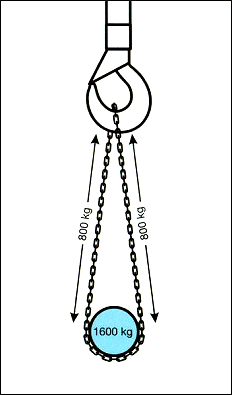
Bild 14-15: Wird eine endlose Kette im Hängegang knickfrei um die Last gelegt und unmittelbar in den Kranhaken gehängt, darf wegen der Biegebeanspruchung im Kranhaken nur 80 % des Doppelstranges genutzt werden. Neigungswinkel bis 7° brauchen nicht zusätzlich berücksichtigt zu werden.
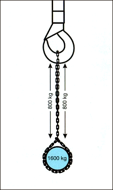
Bild 14-16: Wird eine endlose Kette im Schnürgang um die Last gelegt und unmittelbar in den Kranhaken gehängt, muss die Tragfähigkeit wegen der Biegebeanspruchung im Schnürpunkt und im Kranhaken auf 80 % der Tragfähigkeit des Doppelstranges verringert werden.